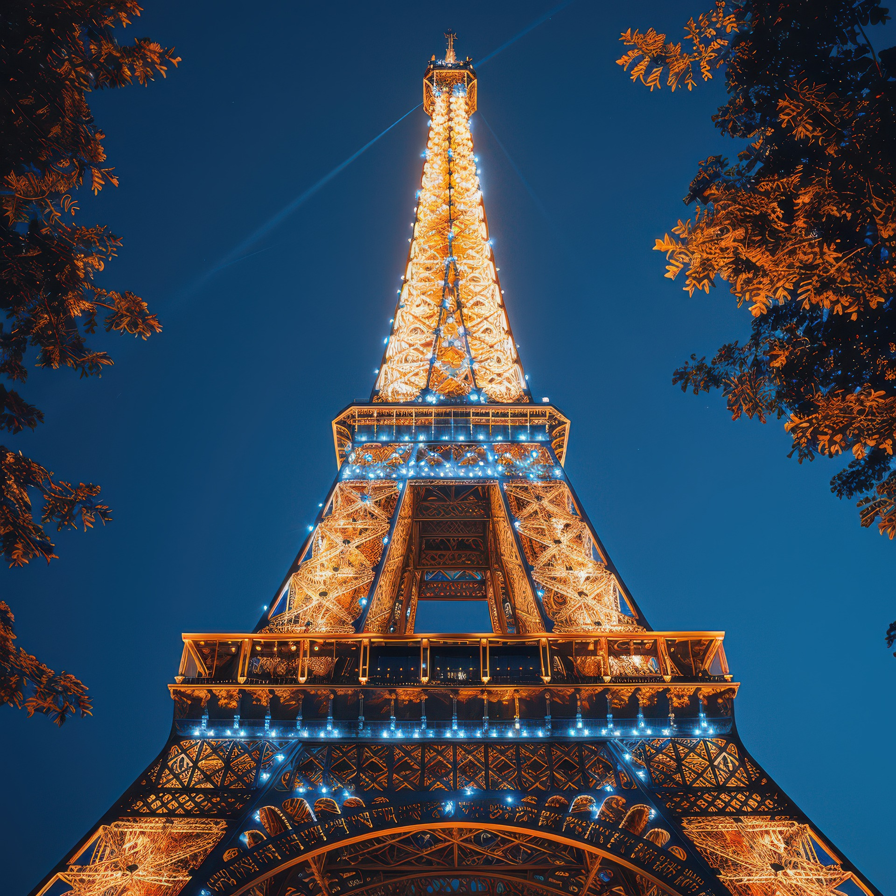
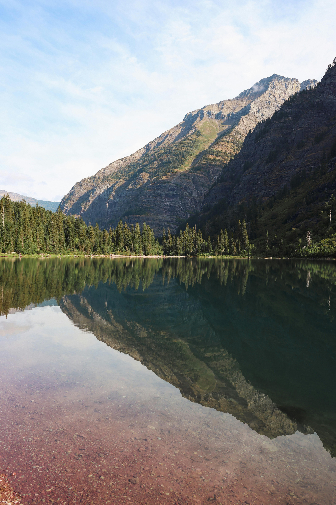

Popular Travel Destinations

Paris, France
France captivates with its rich cultural tapestry and diverse landscapes, from the sun-kissed Riviera to the majestic Alps. Paris, the epitome of sophistication, beckons with its iconic landmarks like the Eiffel Tower and the Louvre Museum, alongside charming cafes and designer boutiques lining its boulevards. Whether exploring historic castles in the Loire Valley or savoring gourmet cuisine in Lyon, each visit promises a new chapter in France's timeless allure.
France captivates with its rich cultural tapestry and diverse landscapes, from the sun-kissed Riviera to the majestic Alps. Paris, the epitome of sophistication, beckons with its iconic landmarks like the Eiffel Tower and the Louvre Museum, alongside charming cafes and designer boutiques lining its boulevards. Whether exploring historic castles in the Loire Valley or savoring gourmet cuisine in Lyon, each visit promises a new chapter in France's timeless allure.
Bora Bora
Bora Bora, nestled in the heart of French Polynesia, is a paradise defined by its crystal-clear waters and overwater bungalows perched above thriving coral reefs. This idyllic island enchants with its lush greenery, secluded beaches, and the iconic Mount Otemanu towering over turquoise lagoons. Whether snorkeling amidst vibrant marine life or indulging in Polynesian hospitality, Bora Bora offers a serene escape where each moment unveils a new facet of its tropical splendor.
Bora Bora, nestled in the heart of French Polynesia, is a paradise defined by its crystal-clear waters and overwater bungalows perched above thriving coral reefs. This idyllic island enchants with its lush greenery, secluded beaches, and the iconic Mount Otemanu towering over turquoise lagoons. Whether snorkeling amidst vibrant marine life or indulging in Polynesian hospitality, Bora Bora offers a serene escape where each moment unveils a new facet of its tropical splendor.

Glacier National Park, USA
Glacier National Park, nestled in the Rocky Mountains of Montana, is a pristine wilderness renowned for its rugged peaks, shimmering glacial lakes, and sprawling valleys adorned with wildflowers. This breathtaking landscape captivates with its abundant wildlife, including grizzly bears and mountain goats, while its network of hiking trails offers unparalleled vistas of glaciers and ancient forests. Whether exploring the historic Going-to-the-Sun Road or camping under starlit skies, Glacier National Park promises an unforgettable journey into the heart of nature's majesty.
Glacier National Park, nestled in the Rocky Mountains of Montana, is a pristine wilderness renowned for its rugged peaks, shimmering glacial lakes, and sprawling valleys adorned with wildflowers. This breathtaking landscape captivates with its abundant wildlife, including grizzly bears and mountain goats, while its network of hiking trails offers unparalleled vistas of glaciers and ancient forests. Whether exploring the historic Going-to-the-Sun Road or camping under starlit skies, Glacier National Park promises an unforgettable journey into the heart of nature's majesty.

Rome
Rome, the eternal city, mesmerizes with its millennia-old history, where ancient wonders like the Colosseum and the Pantheon stand alongside Renaissance masterpieces. The cobblestone streets of Trastevere lead to vibrant piazzas bustling with trattorias and gelaterias, while Vatican City beckons with its spiritual grandeur and Michelangelo's Sistine Chapel ceiling. With each visit, Rome unveils layers of its cultural richness, blending past and present into a timeless mosaic of art, architecture, and la dolce vita.
Rome, the eternal city, mesmerizes with its millennia-old history, where ancient wonders like the Colosseum and the Pantheon stand alongside Renaissance masterpieces. The cobblestone streets of Trastevere lead to vibrant piazzas bustling with trattorias and gelaterias, while Vatican City beckons with its spiritual grandeur and Michelangelo's Sistine Chapel ceiling. With each visit, Rome unveils layers of its cultural richness, blending past and present into a timeless mosaic of art, architecture, and la dolce vita.

Swiss Alps
The Swiss Alps epitomize natural splendor, boasting snow-capped peaks, pristine lakes, and picturesque villages tucked into verdant valleys. From the iconic Matterhorn to the serene shores of Lake Geneva, this alpine wonderland offers exhilarating outdoor adventures year-round, from skiing and snowboarding in winter to hiking and paragliding in summer. Whether indulging in Swiss chocolate in cozy mountain chalets or exploring quaint towns like Zermatt and Interlaken, the Swiss Alps promise an unforgettable retreat into nature's grandeur.
The Swiss Alps epitomize natural splendor, boasting snow-capped peaks, pristine lakes, and picturesque villages tucked into verdant valleys. From the iconic Matterhorn to the serene shores of Lake Geneva, this alpine wonderland offers exhilarating outdoor adventures year-round, from skiing and snowboarding in winter to hiking and paragliding in summer. Whether indulging in Swiss chocolate in cozy mountain chalets or exploring quaint towns like Zermatt and Interlaken, the Swiss Alps promise an unforgettable retreat into nature's grandeur.